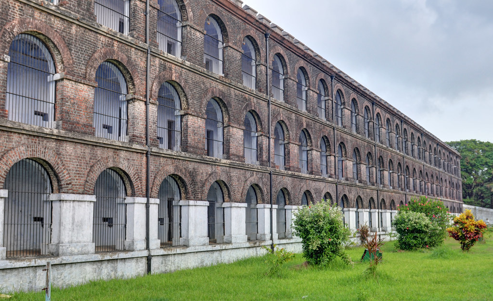

This three-storeyed prison, constructed by Britishers in 1906, is a pilgrimage destination for freedom fighters. This colossal edifice has mutely witnessed the most treacherous of inhumane atrocities borne by the convicts, who were mostly freedom fighters. Now dedicated to the nation as a National Memorial. The saga of the heroic freedom struggle is brought alive in a moving Son-et-Lumiere, shown daily inside the jail compound at 6.00 PM (Hindi) and 7.15 PM (English). Also there is a Museum, an Art gallery, and a Photo gallery, which are open on all days except Monday from 9.00 AM to 12 Noon and 2.00 PM to 5.00 PM.
